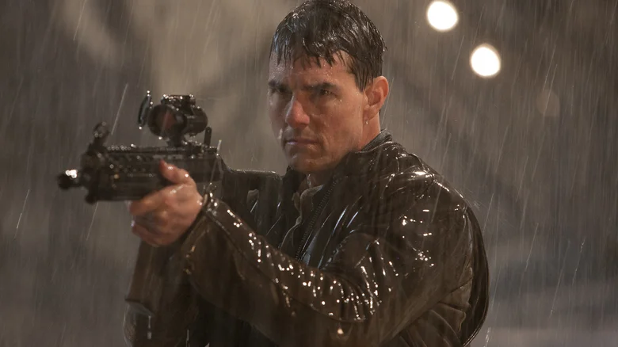

back to home
Tom Cruise as Jack Reacher

In the book, Jack Reacher is described as being "built like a house" with a rugged stature and muscular, tall build. In the first movie remake on Paramount +, many fans complain that the 5"7 Tom Cruise was not the best pick to be the 6"5 Reacher.
 However in the Amazon Prime Video rendition, Alan Ritchson played a much better part as Reacher, described as "a fridge with a pulse" in the books. Ritchson, at least compared to Cruise, is 6"2 and has that perfect, threatening vibe you would get for someone being accused of murder.
However in the Amazon Prime Video rendition, Alan Ritchson played a much better part as Reacher, described as "a fridge with a pulse" in the books. Ritchson, at least compared to Cruise, is 6"2 and has that perfect, threatening vibe you would get for someone being accused of murder.
Alan Ritchson as Jack Reacher Prime Video